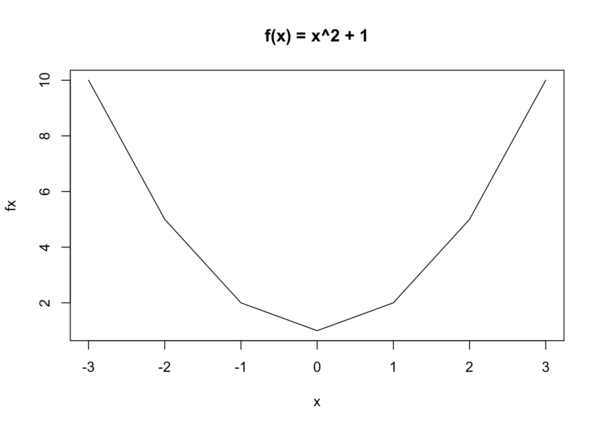
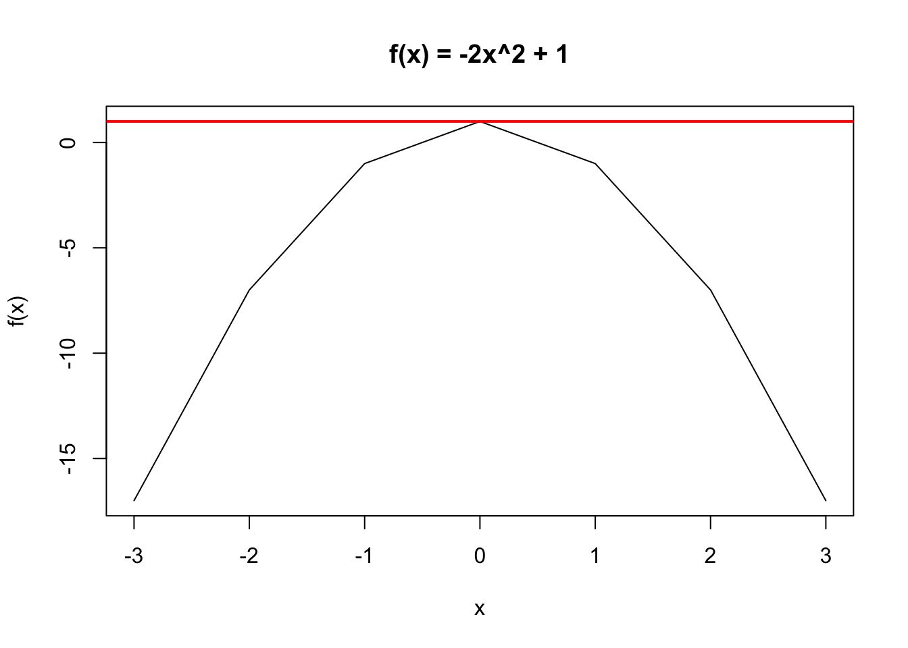

((1+2)^3)^2 [1] 7291 + (2^3)^2 [1] 65This section will provide an overview of a selection of mathematical skills that will be useful in the course. It will not go into everything, but at least provides a start.
MLE will include a range of concepts and skills from linear algebra, calculus, and probability and statistics. You do not need to be an expert in these to succeed in the course, but there are some fundamentals that will make your life easier.
Again, the end goal here is not the math. The end goal is to help your become great social scientists. Some popular methods in social science rely on these concepts. The more you can build an intuition for how, when, where, and why these methods work, the more tools you will have to carry out your research and the more credibility and command you will have over the research you conduct.
Think about restaurants you have visited. There is a difference between a server who says, “Well we have a chicken” and a server who can tell you exactly how the chicken was cooked, what ingredients were used in the sauce, and maybe even how the chicken was raised. Both dishes may be delicious, but you may gain more trust and understanding from the second.
This will not happen overnight nor by the end of the course, but the goal is to continue to progress in understanding. If you pursue a career in academia, this is only the start of years of continued learning and practice. It is a marathon, not a sprint.
Extra Resources
These are some additional resources that may help supplement the sections to follow. These provide far more detail than you will need in the course, but because of that, are much more comprehensive than the notes that will be outlined:
In this first section, we will review mathematical operations that you have probably encountered before. In many cases, this will be a refresher on the rules and how to read notation.
Many of you may have learned the phrase, “Please Excuse My Dear Aunt Sally” which stands for Parentheses (and other grouping symbols), followed by Exponents, followed by Multiplication and Division from left to right, followed by Addition and Subtraction from left to right.
There will be many equations in our future, and we must remember these rules.
To get the answer, we focused on respecting the parentheses first, identifying the inner-most expression \(1 + 2 = 3\), we then moved out and conducted the exponents to get to \((3^3)^2 = 27^2\).
Note how this is different from the answer to \(1 + (2^3)^2 = 1 + 8^2 = 65\), where the addition is no longer part of the parentheses.
Here is a cheat sheet of some basic rules for exponents. These can be hard to remember if you haven’t used them in a long time. Think of \(a\) in this case as a number, e.g., 4, and \(b\), \(k\), and \(l\), as other numbers.
These last two rules can be somewhat tricky. Note that a negative exponent can be re-written as a fraction. Likewise an exponent that is a fraction, the most common of which we will encounter is \(\frac{1}{2}\) can be re-written as a root, in this case the square root (e.g., \(\sqrt{a}\)).
The symbol \(\sum\) can be read “take the sum of” whatever is to the right of the symbol. This is used to make the written computation of a sum much shorter than it might be otherwise. For example, instead of writing the addition operations separately in the example below, we can simplify it with the \(\sum\) symbol. This is especially helpful if you would need to add together 100 or 1000 or more things. We will see these appear a lot in the course, for better or worse, so getting comfortable with the notation will be useful.
Usually, there is notation just below and just above the symbol (e.g., \(\sum_{i=1}^3\)). This can be read as “take the sum of the following from \(i=1\) to \(i=3\). We perform the operation in the expression, each time changing \(i\) to a different number, from 1 to 2 to 3. We then add each expression’s output together.
We will also encounter the product symbol in this course: \(\prod\). This is similar to the summation symbol, but this time we are multiplying instead of adding.
In this class, we will generally assume that \(\log\) takes the natural base \(e\), which is a mathematical constant equal to 2.718…. In other books, the base might be 10 by default.
A key part of maximum likelihood estimation is writing down the log of the likelihood equation, so this is a must-have for later in the course.
Here is a cheat sheet of common rules for working with logarithms.
Why logarithms? There are many different reasons why social scientists use logs.
We will use R for this course, and these operations are all available with R code, allowing R to become a calculator for you. Here are some examples applying the tools above.
((1+2)^3)^2 [1] 7291 + (2^3)^2 [1] 65You can compare the computation below to match with the rules above. Note how the caret ^ symbol is used for exponents, and the asterisk * is used for multiplication. We also have a function sqrt() for taking the square root.
## Let's say a = 4 for our purposes
a <- 4
## And let's say k= 3 and l=5, b=2
k <- 3
l <- 5
b <- 2a^0
a^1[1] 1
[1] 4Note how we use parentheses in R to make it clear that the exponent includes not just k but (k + l)
a^k * a^l
a^(k + l)[1] 65536
[1] 65536Note how we use the asterisk to make it clear we want to multiply k*l
(a^k)^l
a^(k*l)[1] 1073741824
[1] 1073741824(a / b)^k
(a ^k)/(b^k)[1] 8
[1] 8a^(-k)
1 / (a^k)[1] 0.015625
[1] 0.015625a^(1/2)
sqrt(a)[1] 2
[1] 2Summations and products are a little more nuanced in R, depending on what you want to accomplish. But here is one example.
Let’s take a vector (think a list of numbers) that goes from 1 to 4. We will call it ourlist.
ourlist <- c(1,2,3,4)
ourlist
## An alternative is to write this: ourlist <- 1:4[1] 1 2 3 4Now let’s do \(\sum_{i = 1}^4 (i + 1)^2 = (1 +1)^2 + (1+2)^2 + (1 + 3)^2 + (1 + 4)^2 = 54\)
In R, when you add a number to a vector, it will add that number to each entry in the vector. Example
ourlist + 1[1] 2 3 4 5We can use that now to do the inside part of the summation. Note: the exponent works the same way, squaring each element of the inside expression.
(ourlist + 1)^2[1] 4 9 16 25Now, we will embed this expression inside a function in R called sum standing for summation. It will add together each of the inside components.
sum((ourlist + 1)^2)[1] 54If instead we wanted the product, multiplying each element of the inside together, we could use prod(). We won’t use that function very much in this course.
R also has functions related to logarithms, called log() and exp() for the for the natural base \(e\). By default, the natural exponential is the base in the log() R function.
exp(8)[1] 2980.958log(2980.958)[1] 8Note that R also has a number of built-in constants, like pi.
exp(pi)[1] 23.14069log(23.14069)[1] 3.141593log(a * b)
log(a) + log(b)[1] 2.079442
[1] 2.079442Let’s treat \(n=3\) in this example and enter 3 directly where we see \(n\) below. Alternatively you could store 3 as n, as we did with the other letters above.
log(a ^ 3)
3 * log(a)[1] 4.158883
[1] 4.158883log(a/b)
log(a) - log(b)[1] 0.6931472
[1] 0.6931472We will need to take some derivatives in the course. The reason is because a derivative gets us closer to understanding how to minimize and maximize certain functions, where a function is a relationship that maps elements of a set of inputs into a set of outputs, where each input is related to one output.
This is useful in social science, with methods such as linear regression and maximum likelihood estimation because it helps us estimate the values that we think will best describe the relationship between our independent variables and a dependent variable.
For example, in ordinary least squares (linear regression), we choose coefficients, which describe the relationship between the independent and dependent variables (for every 1 unit change in x, we estimate \(\hat \beta\) amount of change in y), based on a method that tries to minimize the squared error between our estimated outcomes and the actual outcomes. In MLE, we will have a different quantity, which we will try to maximize.
To understand derivatives, we will briefly define limits.
Limits
A limit describes how a function behaves as it approaches (gets very close to) a certain value
Example: \(\lim_{x \rightarrow 3} x^2 = 9\) The limit of this function as \(x\) approaches three, is 9. Limits will appear in the expression for calculating derivatives.
For intuition on a derivative, watch this video from The Math Sorcerer.
A derivative is the instantaneous rate at which the function is changing at x: the slope of a function at a particular point.
There are different notations for indicating something is a derivative. Below, we use \(f'(x)\) because we write our functions as \(f(x) = x\). Many times you might see a function equation like \(y = 3x\) There, it will be common for the derivative to be written like \(\frac{dy}{dx}\).
Let’s break down the definition of a derivative by looking at its similarity to the simple definition of a slope, as the rise over the run:
For slope at a specific point \(x\) (the derivative of f(x) at x), we just make the interval \(h\) very small:
Example \(f(x) = 2x + 3\).
This twitter thread by the brilliant teacher and statistician Allison Horst, provides a nice cartoon-based example of the derivative. (Note that sometimes the interval \(h\) is written as \(\Delta x\), the change in \(x\)).
In both OLS and MLE, we reach points where take what are called “first order conditions.” This means we take the derivative with respect to a parameter of interest and then set the derivative = 0 and solve for the parameter to get an expression for our estimator. (E.g., In OLS, we take the derivative of the sum of squared residuals, set it equal to zero, and solve to get an expression for \(\hat \beta\)).
The reason we are interested in when the derivative is zero, is because this is when the instanaeous rate of change is zero, i.e., the slope at a particular point is zero. When does this happen? At a critical point- maximum or minimum. Think about it– at the top of a mountain, there is no more rise (and no decline). You are completing level on the mountaintop. The slope at that point is zero.
Let’s take an example. The function \(f(x) = x^2 + 1\) has the derivative \(f'(x) = 2x\). This is zero when \(x = 0\).
The question remains: How do we know if it is a maximum or minimum?
We need to figure out if our function is concave or convex around this critical value. Convex is a “U” shape, meaning we are at a minimum, while concavity is an upside-down-U, which means we are at a maximum. We do so by taking the second derivative. This just means we take the derivative of the expression we already have for our first derivative. In our case, \(f''(x) = 2\). So what? Well the key thing we are looking for is if this result is positive or negative. Here, it is positive, which means our function is convex at this critical value, and therefore, we are at a minimum.
Just look at the function in R if we plot it.
## Let's define an arbitrary set of values for x
x <- -3:3
## Now let's map the elements of x into y using our function
fx <- x^2 + 1
## Let's plot the results
plot(x = x, y=fx,
xlab = "x", type = "l",
main = "f(x) = x^2 + 1")
Notice that when x=0, we are indeed at a minimum, just as the positive value of the second derivative would suggest.
A different example: \(f(x) = -2x^2 +1\). \(f'(x) = -4x\) When we set this equal to 0 we find a critical value at \(x = 0\). \(f''(x) = -4\). Here, the value is negative, and we know it is concave. Sure enough, let’s plot it, and notice how we can draw a horiztonal line at the maximum, representing that zero slope at the critical point:
x <- -3:3
fx <- -2*x^2 + 1
plot(x = x, y = fx,
ylab = "f(x)",
xlab = "x", type = "l",
main = "f(x) = -2x^2 + 1")
abline(h=1, col = "red", lwd=2)
Below is a cheat sheet of rules for quickly identifying the derivatives of functions.
The derivative of a constant is 0.
Here is the power rule.
We saw logs in the last section, and, yes, we see logs again here.
A very convenient rule is that a derivative of a sum = sum of the derivatives.
Products can be more of a headache. In this course, we will turn some product expressions into summation expressions to avoid the difficulties of taking derivatives with products.
The chain rule below looks a bit tricky, but it can be very helpful for simplifying the way you take a derivative. See this video from NancyPi for a helpful explainer, as well as a follow-up for more complex applications here.
Example: What is the derivative of \(f(x) = \log 5x\)?
Vectors
For our purposes, a vector is a list or “array” of numbers. For example, this might be a variable in our data– a list of the ages of all politicians in a country.
Addition
Scalar multiplication
We can implement vector addition and scalar multiplication in R.
Let’s create a vector \(\mathbf{u}\), a vector \(\mathbf{v}\), and a number lambda.
u <- c(33, 44, 22, 11)
v <- c(6, 7, 8, 2)
lambda <- 3When you add two vectors in R, it adds each component together.
u + v[1] 39 51 30 13We can multiply each element of a vector, u by lambda:
lambda * u[1] 99 132 66 33Element-wise Multiplication
Note: When you multiply two vectors together in R, it will take each element of one vector and multiply it by each element of the other vector.
u * v \(= (u_1 * v_1, u_2 * v_2, \dots u_n * v_n)\)u * v[1] 198 308 176 22A matrix represents arrays of numbers in a rectangle, with rows and columns.
\(A = \begin{pmatrix} a_{11} & a_{12} & a_{13}\\ a_{21} & a_{22} & a_{23} \\ a_{31} & a_{32} & a_{33} \\ a_{41} & a_{42} & a_{43} \end{pmatrix}\)
In R, we can think of a matrix as a set of vectors. For example, we could combine the vectors u and v we created above into a matrix defined as W.
## cbind() binds together vectors as columns
Wcol <- cbind(u, v)
Wcol u v
[1,] 33 6
[2,] 44 7
[3,] 22 8
[4,] 11 2## rbind() binds together vectors as rows
Wrow <- rbind(u, v)
Wrow [,1] [,2] [,3] [,4]
u 33 44 22 11
v 6 7 8 2There are other ways to create matrices in R, but using cbind and rbind() are common.
We can find the dimensions of our matrices using dim() or nrow() and ncol() together. For example:
dim(Wcol)[1] 4 2nrow(Wcol)[1] 4ncol(Wcol)[1] 2Note how the dimensions are different from the version created with rbind():
dim(Wrow)[1] 2 4nrow(Wrow)[1] 2ncol(Wrow)[1] 4Extracting specific components
The element \(a_{ij}\) signifies the element is in the \(i\)th row and \(j\)th column of matrix A. For example, \(a_{12}\) is in the first row and second column.
In R, we can use brackets to extract a specific \(ij\) element of a matrix or vector.
Wcol u v
[1,] 33 6
[2,] 44 7
[3,] 22 8
[4,] 11 2Wcol[2,1] # element in the second row, first column u
44 Wcol[2,] # all elements in the second row u v
44 7 Wcol[, 1] # all elements in the first column[1] 33 44 22 11For matrices, to extract a particular entry in R, you have a comma between entries because there are both rows and columns. For vectors, you only have one entry, so no comma is needed.
u[1] 33 44 22 11u[2] # second element in the u vector[1] 44Matrix Addition
\(A = \begin{pmatrix} a_{11} & a_{12} & a_{13}\\ a_{21} & a_{22} & a_{23} \\ a_{31} & a_{32} & a_{33} \end{pmatrix}\) and \(B = \begin{pmatrix} b_{11} & b_{12} & b_{13}\\ b_{21} & b_{22} & b_{23} \\ b_{31} & b_{32} & b_{33} \end{pmatrix}\)
\(A + B = \begin{pmatrix} a_{11} + b_{11} & a_{12} + b_{12} & a_{13} + b_{13}\\ a_{21} + b_{21} & a_{22} + b_{22} & a_{23} + b_{23} \\ a_{31} + b_{31} & a_{32} + b_{32} & a_{33} + b_{33} \end{pmatrix}\)
\(Q = \begin{pmatrix} 2 & 4 & 1\\ 6 & 1 & 5 \end{pmatrix}\) \(+\) \(R = \begin{pmatrix} 9 & 4 & 2\\ 11 & 8 & 7 \end{pmatrix} = Q + R = \begin{pmatrix} 11 & 8 & 3\\ 17 & 9 & 12 \end{pmatrix}\)
Scalar Multiplication
Take a scalar \(\nu\). Just like vectors, we multiply each component of a matrix by the scalar.
\(\nu Q = \begin{pmatrix} \nu q_{11} & \nu q_{12} & \dots & \nu q_{1n}\\ \nu q_{21} & \nu q_{22} & \dots & \nu q_{2n} \\ \vdots & \vdots & \ddots & \vdots \\ \nu q_{m1} & \nu q_{m2} & \dots & \nu q_{mn} \end{pmatrix}\)
Example: Take \(c = 2\) and a matrix A.
\(cA = c *\begin{pmatrix} 4 & 6 & 1\\ 3 & 2 & 8 \end{pmatrix}\) = \(\begin{pmatrix} 8 & 12 & 2\\ 6 & 4 & 16 \end{pmatrix}\)
Note the Commutativity/Associativity: For scalar \(c\): \(c(AB) = (cA)B = A(cB) = (AB)c\).
Matrix Multiplication
A matrix A and B must be conformable to multiply AB.
For each \(c_{ij}\) component of \(C = AB\), we take the inner product of the \(i^{th}\) row of matrix A and the \(j^{th}\) column of matrix B.
Example: This \(2 \times 3\) matrix is multiplied by a \(3 \times 2\) matrix, resulting in the \(2 \times 2\) matrix.
\(\begin{pmatrix} 4 & 6 & 1\\ 3 & 2 & 8 \end{pmatrix}\) \(\times\) \(\begin{pmatrix} 8 & 12 \\ 6 & 4 \\ 7 & 10 \end{pmatrix}\) = \(\begin{pmatrix} (4*8 + 6*6 + 1*7) & (4*12 + 6*4 + 1*10) \\ (3*8 + 2*6 + 8*7) & (3*12 + 2*4 + 8*10) \end{pmatrix}\)
For example, the entry in the first row and second column of the new matrix \(c_{12} = (a_{11} = 4* b_{11} = 12) + (a_{12} = 6*b_{21} = 4) + (a_{13} = 1*b_{31} = 10)\)
We can also do matrix multiplication in R.
## Create a 3 x 2 matrix A
A <- cbind(c(3, 4, 6), c(5, 6, 8))
A [,1] [,2]
[1,] 3 5
[2,] 4 6
[3,] 6 8## Create a 2 x 4 matrix B
B <- cbind(c(6,8), c(7, 9), c(3, 6), c(1, 11))
B [,1] [,2] [,3] [,4]
[1,] 6 7 3 1
[2,] 8 9 6 11Note that the multiplication AB is conformable because the number of columns in A matches the number of rows in B:
ncol(A)
nrow(B)[1] 2
[1] 2To multiply matrices together in R, we need to add symbols around the standard asterisk for multiplication:
A %*% B [,1] [,2] [,3] [,4]
[1,] 58 66 39 58
[2,] 72 82 48 70
[3,] 100 114 66 94That is necessary for multiplying matrices together. It is not necessary for scalar multiplication, where we take a single number (e.g., c = 3) and multiply it with a matrix:
c <- 3
c*A [,1] [,2]
[1,] 9 15
[2,] 12 18
[3,] 18 24Note the equivalence of the below expressions, which combine scalar and matrix multiplication:
c* (A %*% B) [,1] [,2] [,3] [,4]
[1,] 174 198 117 174
[2,] 216 246 144 210
[3,] 300 342 198 282(c* A) %*% B [,1] [,2] [,3] [,4]
[1,] 174 198 117 174
[2,] 216 246 144 210
[3,] 300 342 198 282A %*% (c * B) [,1] [,2] [,3] [,4]
[1,] 174 198 117 174
[2,] 216 246 144 210
[3,] 300 342 198 282In social science, one matrix of interest is often a rectangular dataset that includes column vectors representing independent variables, as well as another vector that includes your dependent variable. These might have 1000 or more rows and a handful of columns you care about.
Inverse
An \(n\) x \(n\) matrix A is invertible if there exists an \(n\) x \(n\) inverse matrix \(A^{-1}\) such that:
\(I_n = \begin{pmatrix} 1_{11} & 0 & \dots & 0\\ 0& 1_{22} & \dots & 0 \\ \vdots & \vdots & \ddots & \vdots \\ 0 & 0 & \dots & 1_{nn} \end{pmatrix}\)
Note: A matrix must be square \(n\) x \(n\) to be invertible. (But not all square matrices are invertible.) A matrix is invertible if and only if its columns are linearly independent. This is important for understanding why you cannot have two perfectly colinear variables in a regression model.
We will not do much solving for inverses in this course. However, the inverse will be useful in solving for and simplifying expressions.
When we transpose a matrix, we flip the \(i\) and \(j\) components.
\(A = \begin{pmatrix} a_{11} & a_{12} & a_{13}\\ a_{21} & a_{22} & a_{23} \\ a_{31} & a_{32} & a_{33} \\ a_{41} & a_{42} & a_{43} \end{pmatrix}\) then \(A^T = \begin{pmatrix} a'_{11} & a'_{12} & a'_{13} & a'_{14}\\ a'_{21} & a'_{22} & a'_{23} & a'_{24} \\ a'_{31} & a'_{32} & a'_{33} & a'_{34} \end{pmatrix}\)
If \(A = \begin{pmatrix} 1 & 4 & 2 \\ 3 & 1 & 11 \\ 5 & 9 & 4 \\ 2 & 11& 4 \end{pmatrix}\) then \(A^T = \begin{pmatrix} 1 & 3 & 5 & 2\\ 4 & 1 & 9 & 11 \\ 2& 11 & 4 & 4 \end{pmatrix}\)
Check for yourself: What was in the first row (\(i=1\)), second column (\(j=2\)) is now in the second row (\(i=2\)), first column (\(j=1\)). That is \(a_{12} =4 = a'_{21}\).
We can transpose matrices in R using t(). For example, take our matrix A:
A [,1] [,2]
[1,] 3 5
[2,] 4 6
[3,] 6 8t(A) [,1] [,2] [,3]
[1,] 3 4 6
[2,] 5 6 8In R, you can find the inverse of a square matrix with solve()
solve(A)Error in solve.default(A): 'a' (3 x 2) must be squareNote, while A is not square A’A is square:
AtA <- t(A) %*% A
solve(AtA) [,1] [,2]
[1,] 2.232143 -1.553571
[2,] -1.553571 1.089286These are a few additional properties and rules that will be useful to us at various points in the course:
Example of symmetric matrix:
\(D = \begin{pmatrix} 1 & 6 & 22 \\ 6 & 4 & 7 \\ 22 & 7 & 11 \end{pmatrix}\)
## Look at the equivalence
D <- rbind(c(1,6,22), c(6,4,7), c(22,7,11))
D [,1] [,2] [,3]
[1,] 1 6 22
[2,] 6 4 7
[3,] 22 7 11t(D) [,1] [,2] [,3]
[1,] 1 6 22
[2,] 6 4 7
[3,] 22 7 11What is the trace of this matrix?
## diag() pulls out the diagonal of a matrix
sum(diag(D))[1] 16Due to conformability and other considerations, matrix operations are somewhat more restrictive, particularly when it comes to commutativity.
Rules for Inverses and Transposes
These rules will be helpful for simplifying expressions. Treat \(A\), \(B\), and \(C\) as matrices below, and \(s\) as a scalar.
Let’s say we have a \(p \times 1\) “column” vector \(\mathbf{x}\) and another \(p \times 1\) vector \(\mathbf{a}\).
Taking the derivative with respect to vector \(\mathbf{x}\).
Let’s say we have \(y = \mathbf{x}'\mathbf{a}\). This process is explained here. Taking the derivative of this is called the gradient.
\(\frac{\delta y}{\delta x} = \begin{pmatrix}\frac{\delta y}{\delta x_1} \\ \frac{\delta y}{\delta x_2} \\ \vdots \\ \frac{dy}{dx_p} \end{pmatrix}\)
\(y\) will have dimensions \(1 \times 1\). \(y\) is a scalar.
Well, this is just vector \(\mathbf{a}\)
Answer: \(\frac{\delta }{\delta x} \mathbf{x}^T\mathbf{a} = \mathbf{a}\). We can apply this general rule in other situations.
Example 2
Let’s say we want to differentiate the following where vector \(\mathbf{y}\) is \(n \times 1\), \(X\) is \(n \times k\), and \(\mathbf{b}\) is \(k \times 1\). Take the derivative with respect to \(b\).
Remember the derivative of a sum is the sum of derivatives. This allows us to focus on particular terms.
Example 3
Another useful rule when a matrix \(A\) is symmetric: \(\frac{\delta}{\delta \mathbf{x}} \mathbf{x}^TA\mathbf{x} = (A + A^T)\mathbf{x} = 2A\mathbf{x}\).
Details on getting to this result. We are treating the vector \(\mathbf{x}\) as \(n \times 1\) and the matrix \(A\) as symmetric.
When we take \(\frac{\delta}{\delta \mathbf{x}}\) (the derivative with respect to \(\mathbf{x}\)), we will be looking for a result with the same dimensions \(\mathbf{x}\).
\(\frac{\delta }{\delta \mathbf{x}} = \begin{pmatrix}\frac{\delta }{\delta x_1} \\ \frac{\delta }{\delta x_2} \\ \vdots \\ \frac{d}{dx_n} \end{pmatrix}\)
Let’s inspect the dimensions of \(\mathbf{x}^TA\mathbf{x}\). They are \(1 \times 1\). If we perform this matrix multiplication, we would be multiplying:
\(\begin{pmatrix} x_1 & x_2 & \ldots & x_i \end{pmatrix} \times \begin{pmatrix} a_{11} & a_{12} & \ldots & a_{1j} \\ a_{21} & a_{22} & \ldots & a_{2j} \\ \vdots & \vdots & \vdots & \vdots \\ a_{i1} & a_{i2} & \ldots & a_{ij} \end{pmatrix} \times \begin{pmatrix}x_1 \\ x_2 \\ \vdots \\ x_j \end{pmatrix}\)
To simplify things, let’s say we have the following matrices, where \(A\) is symmetric:
\(\begin{pmatrix} x_1 & x_2 \end{pmatrix} \times \begin{pmatrix} a_{11} & a_{12} \\ a_{21} & a_{22} \end{pmatrix} \times \begin{pmatrix} x_1 \\ x_2 \end{pmatrix}\)
We can perform the matrix multiplication for the first two quantities, which will result in a \(1 \times 2\) vector. Recall in matrix multiplication we take the sum of the element-wise multiplication of the \(ith\) row of the first object by the \(jth\) column of the second object. This means multiply the first row of \(\mathbf{x}\) by the first column of \(A\) for the entry in cell \(i=1; j=1\), and so on.
\(\begin{pmatrix} (x_1a_{11} + x_2a_{21}) & (x_1a_{12} + x_2a_{22}) \end{pmatrix}\)
We can then multiply this quantity by the last quantity
\(\begin{pmatrix} (x_1a_{11} + x_2a_{21}) & (x_1a_{12} + x_2a_{22}) \end{pmatrix} \times \begin{pmatrix}x_1 \\ x_2 \end{pmatrix}\)
This will results in the \(1 \times 1\) quantity: \((x_1a_{11} + x_2a_{21})x_1 + (x_1a_{12} + x_2a_{22})x_2 = x_1^2a_{11} + x_2a_{21}x_1 + x_1a_{12}x_2 + x_2^2a_{22}\)
We can now take the derivatives with respect to \(\mathbf{x}\). Because \(\mathbf{x}\) is \(2 \times 1\), our derivative will be a vector of the same dimensions with components:
\(\frac{\delta }{\delta \mathbf{x}} = \begin{pmatrix}\frac{\delta }{\delta x_1} \\ \frac{\delta }{\delta x_2} \end{pmatrix}\)
These represent the partial derivatives of each component within \(\mathbf{x}\)
Let’s focus on the first: \(\frac{\delta }{\delta x_1}\).
\[\begin{align*} \frac{\delta }{\delta x_1} x_1^2a_{11} + x_2a_{21}x_1 + x_1a_{12}x_2 + x_2^2a_{22} &=\\ &= 2x_1a_{11} + x_2a_{21} + a_{12}x_2\\ \end{align*}\]We can repeat this for \(\frac{\delta }{\delta x_2}\)
\[\begin{align*} \frac{\delta }{\delta x_2} x_1^2a_{11} + x_2a_{21}x_1 + x_1a_{12}x_2 + x_2^2a_{22} &=\\ &= a_{21}x_1 + x_1a_{12} + 2x_2a_{22}\\ \end{align*}\]Now we can put the result back into our vector format:
\(\begin{pmatrix}\frac{\delta }{\delta x_1} = 2x_1a_{11} + x_2a_{21} + a_{12}x_2\\ \frac{\delta }{\delta x_2} = a_{21}x_1 + x_1a_{12} + 2x_2a_{22}\end{pmatrix}\)
Now it’s just about simplifying to show that we have indeed come back to the rule.
Recall that for a symmetric matrix, the elements in rows and columns \(ij\) = the elements in \(ji\). This allows us to read \(a_{21} = a_{12}\) and combine those terms (e.g., \(x_2a_{21} + a_{12}x_2 =2a_{12}x_2\)) :
\(\begin{pmatrix}\frac{\delta }{\delta x_1} = 2x_1a_{11} + 2a_{12}x_2\\ \frac{\delta }{\delta x_2} = 2a_{21}x_1 + 2x_2a_{22}\end{pmatrix}\)
Second, we can now bring the 2 out front.
\(\begin{pmatrix}\frac{\delta }{\delta x_1} \\ \frac{\delta }{\delta x_2} \end{pmatrix} = 2 * \begin{pmatrix} x_1a_{11} + a_{12}x_2\\ a_{21}x_1 + x_2a_{22}\end{pmatrix}\)
Finally, let’s inspect this and show it is equivalent to this multiplication where we have a \(2 \times 2\) \(A\) matrix multiplied by a \(2 \times 1\) \(\mathbf x\) vector. Minor note: Because any individual element of a vector is just a single quantity, we can change the order (e.g., \(a_{11}*x_1\) vs. \(x_1*a_{11}\)). We just can’t do that for full vectors or matrices
\(2A\mathbf{x} = 2* \begin{pmatrix} a_{11} & a_{12} \\ a_{21} & a_{22} \end{pmatrix} \times \begin{pmatrix}x_1 \\ x_2 \end{pmatrix} = 2 * \begin{pmatrix} a_{11}x_1 + a_{12}x_2 \\ a_{21}x_1 + a_{22}x_2 \end{pmatrix}\)
The last quantity is the same as the previous step. That’s the rule!
Applying the rules
Why on earth would we care about this? For one, it helps us understand how we get to our estimates for \(\hat \beta\) in linear regression. When we have multiple variables, we don’t just want the best estimate for one coefficient, but a vector of coefficients. See more here.
In MLE, we will find the gradient of the log likelihood function. We will further go into the second derivatives to arrive at what is called the Hessian. More on that later.
Given \(X\) is an \(n\) x \(k\) matrix,
Below are the solutions for the above problems. Remember, try on your own first, then
24/3 + 5^2 - (8 -4)[1] 29## sol 1
1*3 + 2*3 + 3*3 + 4*3 + 5*3[1] 45## sol 2
i <- 1:5
sum(i*3)[1] 45\[\begin{align*} f'(x) &= 2 * \frac{1}{(x + 3)} * 1\\ &= \frac{2}{(x + 3)} \end{align*}\] If we didn’t take that simplifying step, we can still solve:
\[\begin{align*} f'(x) &= \frac{1}{(x + 3)^2} * 2 * (x + 3) *1\\ &= \frac{2}{(x + 3)} \end{align*}\]Given \(X\) is an \(n\) x \(k\) matrix,